Can a generalist VLM (Claude Opus 4.8) curate a trip album as well as the engineered
Albumify pipeline? Same 122 photos → 768px (hash 878d0c14331d19a3…), each picks an ordered
K=20. Spec-102.
| Metric | Albumify (default) | VLM (opus-4-8) | Read |
|---|---|---|---|
| Distinct scenes covered | 15 | 16 | by Albumify's own scene clusters |
| Redundancy rate | 0.25 | 0.20 | VLM slightly more diverse — and it never saw the clusters |
| Pick overlap | 6 / 20 identical | 70% of the album is a genuine disagreement | |
| Picks Albumify quality-filtered | — | 3: 20250822_122632, 20250822_125147, 20250822_194259 | VLM kept shots Albumify auto-rejected on quality |
default pipeline — the product path, with occlusion & tilt penalties active (SIGHTING-117 release-model-per-step fix; no longer OOMs). (2) The human blind A/B verdict is not yet collected — the judging page is
built (ab_viewer_budapest.html); this is a solo N=1 pilot, so even once judged it is an
illustrative anecdote, not a measured win-rate.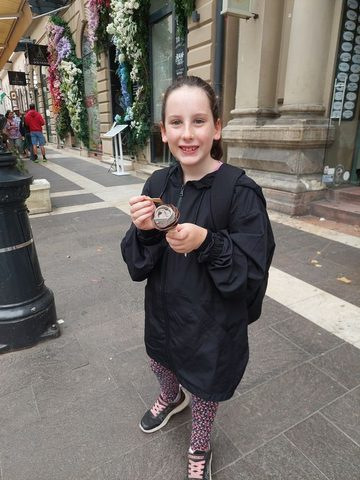
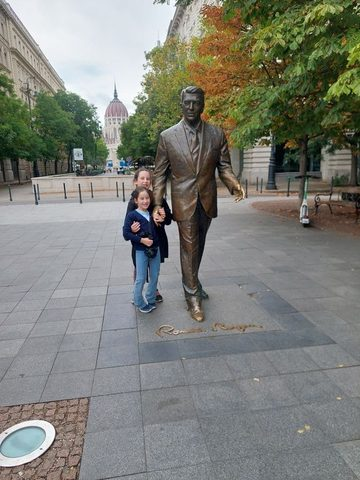
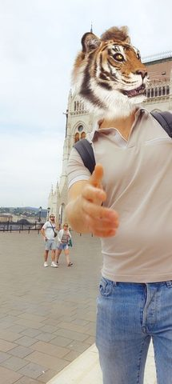
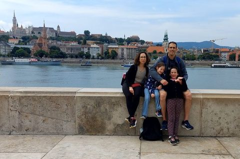
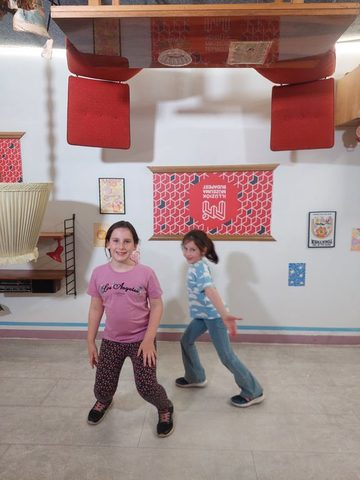
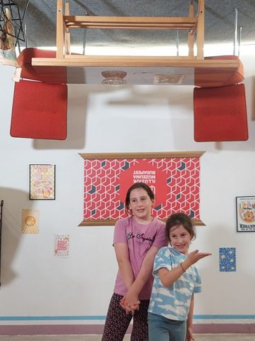
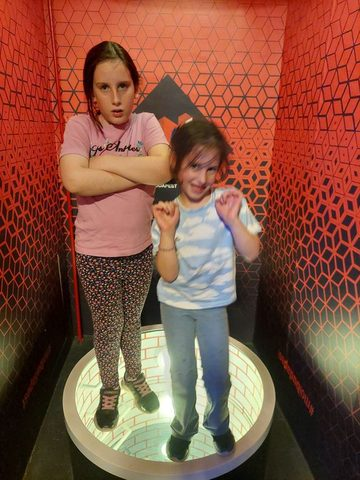
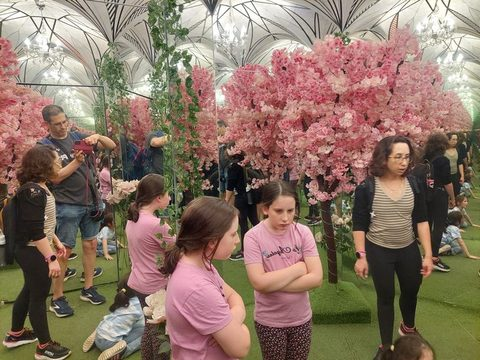
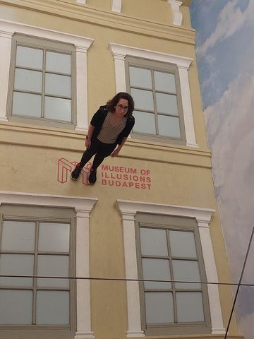
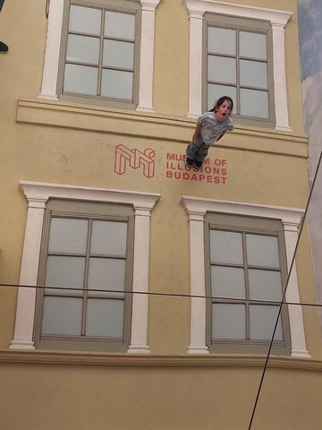
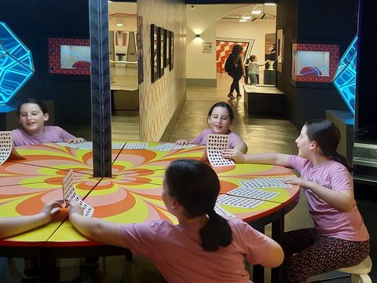
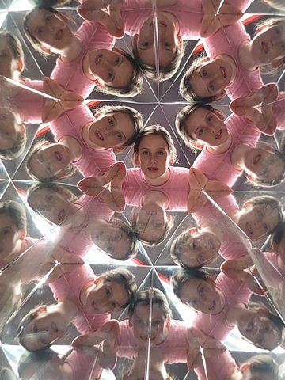
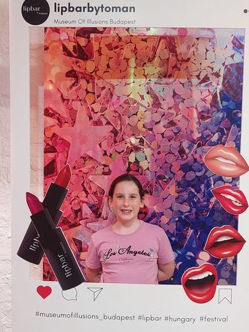
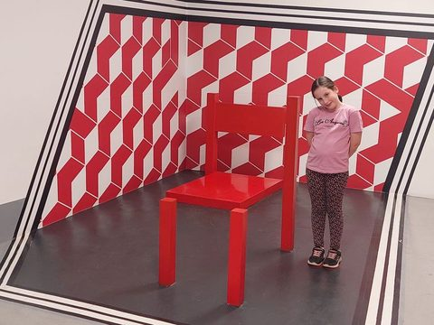
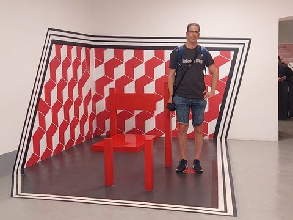
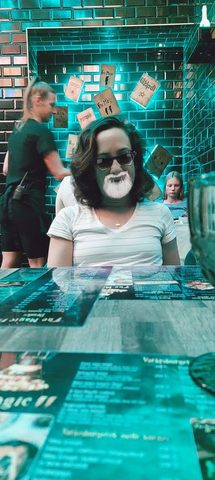
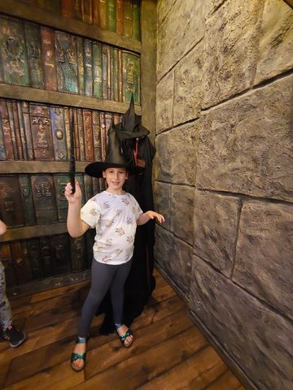
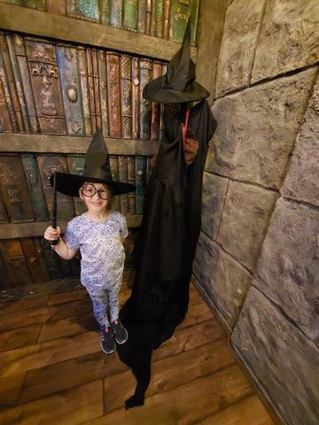
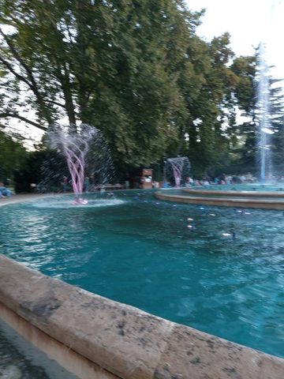
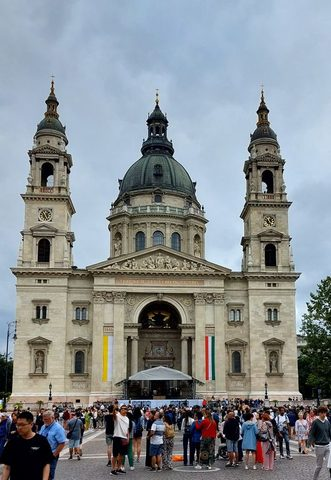
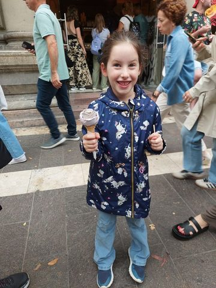
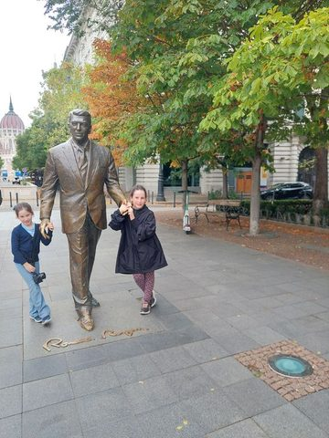
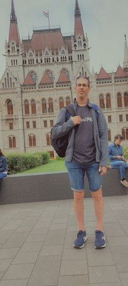
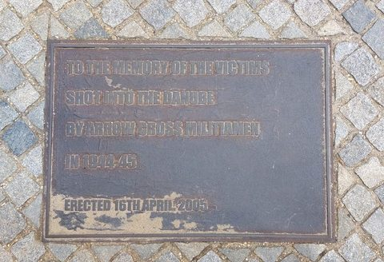
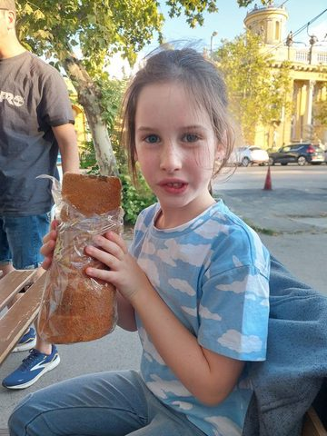
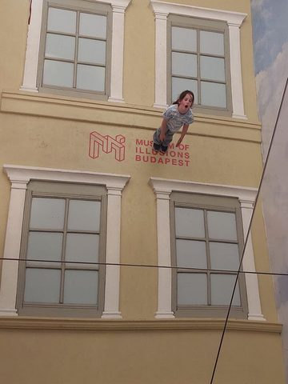
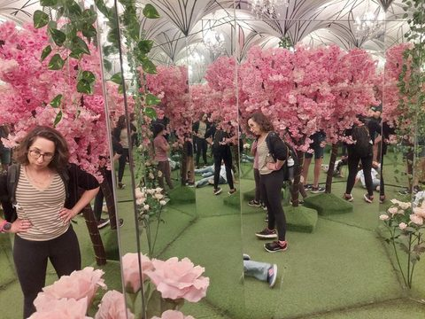
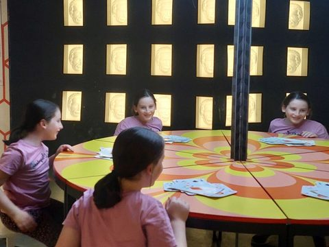
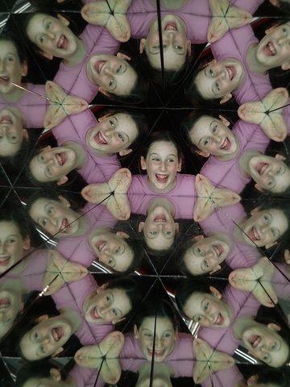
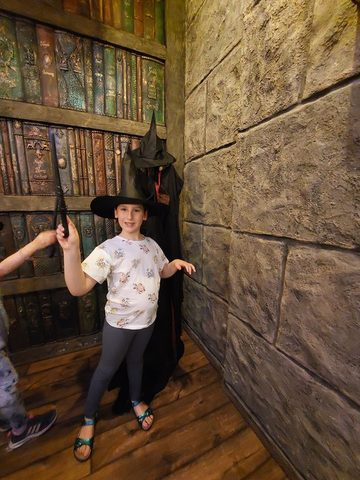
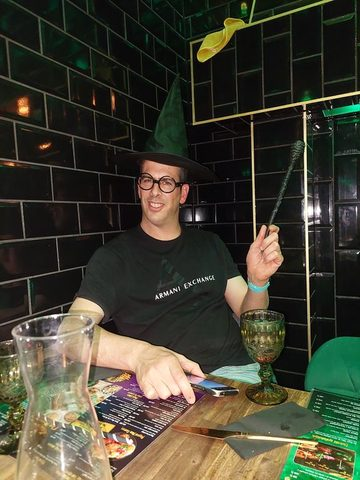
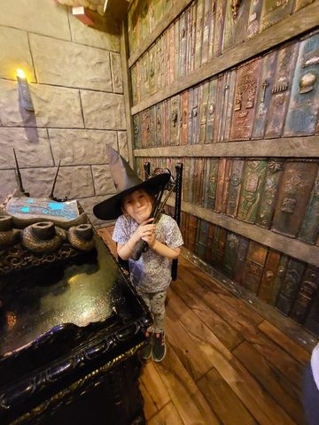
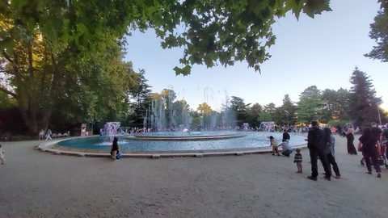
The VLM classified the whole collection as trip / city and wrote the arc: "A family's playful city trip through Budapest unfolds from landmark strolls past Parliament and St. Stephen's Basilica to whimsical afternoons goofing off in the Museum of Illusions and a magical wizard café, capped by the musical fountain glowing at dusk." It then grouped the trip into 30 moments with human-readable labels, moment tags, and a best-frame reason each (structured JSON, product-shaped). A sample:
| Day | Moment | Tag | Why this frame |
|---|---|---|---|
| 2025-08-22 | Ice cream stops on the promenade | candid | That gap-toothed grin over the unicorn-jacket and rose-shaped gelato is pure kid-on-holiday joy |
| 2025-08-22 | St. Stephen's Basilica | landmark | Clean full-facade shot of the basilica with the crowd below for scale |
| 2025-08-22 | The one where they walk with Reagan | posed-group | Both girls 'walking' hand-in-hand with the statue, with Parliament's dome peeking behind — best mix of playful and place |
| 2025-08-22 | Walking to Parliament (with a sneaky lens finger) | candid | Dad standing tall in front of Parliament's Gothic facade — the keeper portrait of the set |
| 2025-08-22 | Filter fun at the light-fountain plaza | goofing | The glowing ripple installation reads best on its own — dreamy blue-hour detail |
| 2025-08-22 | The one where everyone got animal-head filters | goofing | Tiger-head dad getting a hug from his daughter is the funniest, most heart-warming frame of the filter spree |
| 2025-08-22 | Snack break by the water | candid | Daughter mid-bite in her floral leggings, dad standing by — easy everyday travel moment |
| 2025-08-22 | Behind mom on the Parliament walk | candid | Incidental over-the-shoulder frame; keep as connective tissue |
| 2025-08-22 | Parliament facade, up close | landmark | Symmetrical, unobstructed portrait of the Parliament's grand entrance |
| 2025-08-22 | Family portrait with Buda skyline | posed-group | The whole family together with Fisherman's Bastion across the river — the album's anchor shot |
| 2025-08-22 | Shoes on the Danube memorial | detail | The English memorial plaque tells the story of the place clearly and solemnly |
| 2025-08-22 | Street-food langos in the park | meal | Wide-eyed girl proudly holding the giant fried snack — a great food memory |
| 2025-08-22 | Museum of Illusions: upside-down room | goofing | Both girls hamming it up under the ceiling-mounted furniture — the illusion really pops |
| 2025-08-22 | The tunnel-vortex room | goofing | Little one caught mid-spin with motion blur — the room's dizzy effect at its liveliest |
| 2025-08-22 | Infinity mirror blossom room | candid | Mom multiplied endlessly among the pink blossoms — the most striking infinity-mirror frame |
| 2025-08-22 | The one where she's a giant peeking over | goofing | Enormous giggling face over the tiny Budapest skyline — instant laugh |
| 2025-08-22 | Sliding down the wall illusion | goofing | Daughter looks like she's dangling off the building facade, mouth open in mock-terror — the illusion nails it |
| 2025-08-22 | The purple vortex tunnel | goofing | Arms out, off-balance in the swirling purple — captures the wobble of the tunnel |
| 2025-08-22 | The infinity card-table | goofing | Grins reflected all around the endless table, girls reaching across — best sense of the playful multiplication |
| 2025-08-22 | Lipbar photo-frame selfies | posed-group | Big toothy laugh framed in the glittery star backdrop — the most joyful of the frame shots |
| 2025-08-22 | Kaleidoscope faces | goofing | Wide-open laughing face fractured into a flower of reflections — the most alive kaleidoscope frame |
| 2025-08-22 | The tilted-room red chair | goofing | Dad posing with the floating red chair closes out the illusion museum on a fun family note |
| 2025-08-24 | Snapchat filter silliness at the wizard café | goofing | The opossum-on-the-head filter is the funniest, most memorable AR gag of the whole table session |
| 2025-08-24 | The Magic café — floating menus & atmosphere | detail | Best captures the neon-lit floating letters and 'The Magic' menu that set the scene |
| 2025-08-24 | Little witch tries on the hat & robe | posed-group | Big genuine grin under the witch hat and glasses — the keeper of her costume moment |
| 2025-08-24 | Big brother casts a spell | goofing | Wand raised and confident pose — the classic 'young wizard' shot |
| 2025-08-24 | Cauldron potion-brewing spot | candid | Front-facing with the glowing blue cauldron in frame tells the story best |
| 2025-08-24 | Dad the wizard raises his wand | posed-group | Only shot of dad fully in costume with wand and goblet — a fun solo portrait |
| 2025-08-24 | City Park fountain in daylight | landmark | The dramatic tall water jet catching the light is the most striking fountain frame |
| 2025-08-24 | Musical fountain lights up at dusk | golden-hour | Wide view under the tree with the crowd and lit fountain captures the whole evening scene |